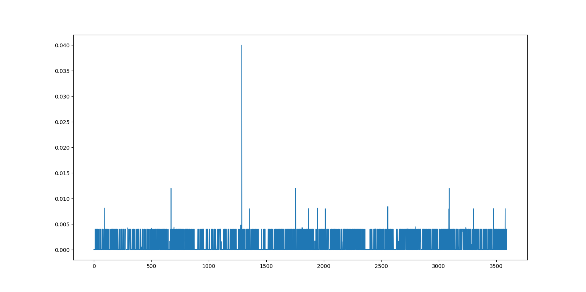

基于图像隐写的R6直播技术
（哈哈 这个排版 稀烂咯）
目标
我将实验几种算法方法，试图实现简单的图像隐写，或者说“幻影坦克”，我需要寻找可靠性高（抗干扰抗压缩）、计算量小的算法来规避B站的直播系统，加密时只要肉眼看不出问题，解密时只要肉眼能看得出就彩六即可。目前我考虑两种算法，一是原本用于数据增强的mix up算法，他是简单的线性叠加，但是也由于其线性使其很容易逆转；二是后门攻击《Hidden Trigger Backdoor Attacks》中提到的方法，其原本用于隐藏带有触发器的图片；三是基于缩放的方法（准确的说近邻法），也就是将底图按像素替换mask的一部分，解码就只需要删除特定行列即可；四是末位置0法（准确的说应该是LSB），他实质上是对图的二进制形式进行修改，和mix up类似，但是他解码时不需要知道mask，缺点是不抗压缩；五是基于小波变换，将图片藏到频域；六是基于稀疏表示。除此以外，我可能考虑将图像转为灰度图以减少计算的难度，以及将声音编码进图像中，测试一张图像能叠加多少内容（提高容量可以让我们把一张高清图拆解之后塞进小图里面），检查其在频域的变化，抗干扰测试和抗压缩测试，图像校验和修复。
免责声明
孩子不懂事，瞎搞来玩的。不是正经研究，不要问为什么不计算峰值信噪比之类的，本来就是人眼看不出来就行了。有问题不要问作者，作者也不懂。不要试图用这些方法做任何违法违规的事情，对于正儿八经的隐写或者盲水印检测，这些都太落后了。
mix up
mix up是一种简单的线性叠加，其表达式可以为$imout=im\times lam+mask\times (1-lam)$，在原本的应用中lam应该是一个随机数矩阵，但是在我们的应用中我们将使用一个固定的数，我们取0.1，因此对应的解码就是$im=(imout-mask\times (1-lam))\div lam$，我们使用代码：
lam=0.1
im_mixup=(im1*lam+im2*(1-lam)).astype(uint8)
plt.subplot(2,2,3),plt.title("mix up"),plt.imshow(im_mixup)
plt.subplot(2,2,4),plt.title("encoder"),plt.imshow(((im_mixup-im2*(1-lam))/lam).astype(uint8))
plt.show()
（是不是很简单）
我们使用1920×1080的图片进行实验，接下来看看运行结果
粗看没有什么问题，但是我们把图像放大
会发现在混合图（第三张，mix up）上面隐约有能看到原图，而求解出来的图上面又有一些噪点，接下来再看一组图
顺便一提，雪狐真可爱，嘿嘿
可以看到在浅色mask的情况下的深色内容十分明显，如果变成动态的则更加显眼，同时在色块边缘，特别是颜色变化较大的地方（应该是梯度较大？等下做个RGB的梯度分析吧）杂色更多，可能是还原时小数计算导致的。那么接下来我们试着把原图处理成灰度图。
看起来好了点，但是有些地方还是可以透过mask看到内容。如果我们把内容图的占比，也就是lam降低呢？
这里使用了lam=0.02，可以看到，“异构体”的图标确实不见了，但是求解出来的图像基本上失去了内容，目前测试来看0.05以上比较合适（上面一行是叠加图，下面一行是还原图），不过说起来，之后可以根据灰度图的差值优化出一个更优的lam。同时我们还记录了每一次叠图+解析的耗时，显示在图片下方，平均下来这个过程耗时约0.2s（使用i5-7200U@2.50GHz运行）
再来看看以lam=0.1时，进行mix up后他们在频域上的变化（应该是看不出来关系的）
关于抗干扰，从理论上来说，线性叠加是不抗压缩的，但是因为这个算法对于压缩不敏感，特别是灰度之后（不像频域），所以观感上差别不大。如下是通过对mix_up压缩一定比例之后用立方插值（cv2.INTER_CUBIC）重新恢复大小再用正确的mask进行解码的结果
我靠，打脸了，这里模拟压缩之后等效于mask的图形范围变大，覆盖了不少原图。那应用的时候得想办法减少压缩比例才行。或者我们找到这个确切的压缩比例，在还原时也对mask进行压缩或者模糊，通过下图可以看到对于压缩比例不大的情况还是挺有效的：
处理完了图片，我们来看看处理视频的能力，这里主要是看进行叠视频和解视频的耗时，这里以两个分辨率相同长度2分钟的B站视频为例。下图是进行叠图时的实时帧率（用1除以计算时长得到，其中计算时长包括了加密和解密两个过程），两个原视频都是30帧的，实时帧率基本上在25~30帧附件波动（使用i5-7200U@2.50GHz运行），应用时可能要考虑抽帧或者优化算法。
结论：对图像进行灰度化后，使用颜色比较混杂的（比如色系相反）图作为mask，以接近0.1的比例进行叠图是可行的，并且编码解码速度较快。缺点是用户必须知道mask和lam，而且最好知道压缩情况。
近邻法
近邻法就是简单的替换掉固定区域的像素，因此mask和底图面积大小最好是四倍之类的整数倍关系。然后考虑直接用列表切片不用for循环，这样子计算时间能降不少，关键代码如下：
if im1.shape[0]*sizes!=im2.shape[0] or im1.shape[1]*sizes!=im2.shape[1]:
im1=cv2.resize(im1,(im2.shape[1]//sizes,im2.shape[0]//sizes))
mixup=im2.copy()
mixup[:mixup.shape[0]:sizes,:mixup.shape[1]:sizes]=im1
decoder=mixup[:mixup.shape[0]:sizes,:mixup.shape[1]:sizes]
return mixup,decoder
运行结果如下
做一个简单的傅里叶变换，可以看到解码出来的图被“放大”了，以及混合时的频域图有多个中心
问题也很明显，如果sizes（控制几乘几个像素为一个单元）太小，隐写太明显，sizes太大，原图压缩太多变糊。我们做了一组测试，第一行是sizes，第二行是混合后的图，第三行是解析出来的图，第四行是运行时间（包括编码解码），可以看到比mix_up快了不少。目前来看sizes选3和4会比较合适

至于抗压缩嘛，这种直接插进像素的方法本身就相当于加噪声，基本上一压缩就没救了。下面是sizes=4时，压缩后复原的结果，基本上就是无法复原

算了，直接看视频的处理情况吧，下图是每帧计算耗时，是挺快的，估计是少了灰度化这类的计算吧。一开始我也想计算帧率的直到他告诉我不能除以零，虽然不知道为什么，但是确实time.time()函数读到的时间差就是0，基本上都在0.005秒内（使用i5-7200U@2.50GHz运行）。

结论就是近邻法运算速度极快，但是信息容量小而且不抗压缩和模糊，可以用这些多出来的时间对原图做点什么。
末位置0法（LSB）
简单来说就是，一个像素的RGB中的一个分量不是一个八位的二进制嘛，如果删掉最后面的三位，也就是相当于约成8的倍数（至多-7），从视觉上可能效果差不多，删掉的这三位用底图的前三位来替换，G和B通道以此类推，但是B只改两位（不过具体是332还是别的方法，别人有测，先逝世罢）。涉及位运算嘛，所以直接生成模板图来进行cv2的图位运算（而且反正是相同值的模板图，可以拉伸，但是还是先研究$1920\times 1080$的。模板图推算过程如下：
$([R,G,B]\And[248,248,252]) | \big((T\And[224,28,3])\div[32,4,1]\big)$
$([R,G,B]\And[0b11111000,0b11111000,0b11111100]) | \big((T\And[0b11100000,0b00011100,0b00000011])\div[0b00100000,0b00000100,0b00000001]\big)$
$\big((S\And[7,7,3])[32,4,1]\big) \quad \text{#解码过程}$
$\big((S\And[0b00000111,0b00000111,0b00000011])[0b00100000,0b00000100,0b00000001]\big) \quad \text{#解码过程}$
其中T是底图的灰度图，是一个深度为3的包含8位二进制的矩阵（就是对灰度图进行拓展到三个通道），如下是关键代码：
def bits(im1,im2,W:list):
mixup=(im1&W[0])|((im2&W[1])//W[2])
decoder=(mixup&W[3])*W[2]
decoder=np.sum(decoder,axis=2)
return mixup,decoder
def generate():
w1=np.repeat(np.repeat([[248,248,252]],1920,axis=0),1080,axis=0)
w2=np.repeat(np.repeat([[224,28,3]],1920,axis=0),1080,axis=0)
w3=np.repeat(np.repeat([[32,4,1]],1920,axis=0),1080,axis=0)
rw1=np.repeat(np.repeat([[7,7,3]],1920,axis=0),1080,axis=0)
return [w1,w2,w3,rw1]
三通道的灰度图我们是通过cv2灰度化然后用np去叠出来的
im1=cv2.cvtColor(im1,cv2.COLOR_BGR2GRAY)
im1=np.stack((im1,im1,im1),axis=-1)
运行结果和傅里叶变换如下，可以看到和之前的方法相比，无论是空间域还是频域，mask都没有明显的变化，解析的效果也非常好：
LSB可调的参数特别少，无非是优化计算流程，调整运算模板的值，所以我们直接来看看抗压缩吧，按理说LSB应该不怎么抗压缩，毕竟后几位很容易被模糊掉。
算了，还是看看视频隐写的情况吧，基本上能保证30帧（使用i5-7200U@2.50GHz运行）。
结论就是LSB作为经典隐写算法，隐蔽效果好（从肉眼的角度来说）但是也不抗模糊，而且目前运算速度也比较感人，应该可以再优化。
小波变换
就是基于离散小波变换（DWT）的图片隐写，小波变换可以理解为以小波基为基的傅里叶变换，对比于傅里叶变换，据说可以更好的隐藏信息，直接把信息藏在特定的频率范围内。我将先尝试把数据转换到频域之后用近邻法来替换，关键代码如下：